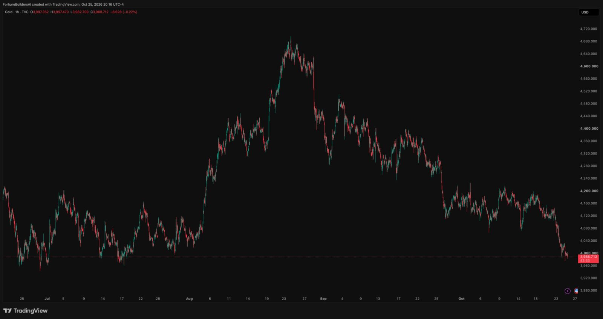

Lectura semanal
Bajista, con rebotes a confirmar
Convicción media. La estructura reciente es de máximos y mínimos descendentes después de perder USD 4,100.

La captura del 25 de octubre muestra a XAUUSD en USD 3,988.712, una caída aproximada de 4.73% frente a la referencia de USD 4,186.960 de la semana anterior. El cierre por debajo de USD 4,100 y la presión bajo USD 4,000 cambian la lectura: ahora se observan rebotes y aceptación de precio, no se asume un giro automático.
Lectura educativa, no señal de inversión
Convicción media. La estructura reciente es de máximos y mínimos descendentes después de perder USD 4,100.
El precio llega a un soporte visible. Dentro de esta franja puede haber rebotes, barridos o pausa; el cierre H4 sigue siendo la referencia.
Recuperar USD 4,080 abre revisión de USD 4,100. Perder USD 3,960 mantiene la presión y exige no anticipar un suelo.
La decisión de la Fed llega el miércoles 28; el jueves 29 se publican PIB adelantado y PCE a las 8:30 AM Miami.
Consulta este bloque antes de abrir el gráfico y vuelve después de la Fed y de los datos del jueves.
El quiebre de USD 4,100 cambia el contexto del rango anterior. No convierte cualquier caída en una entrada.
La respuesta del precio dentro o fuera de este tramo orienta la lectura de corto plazo.
Comunicado a las 2:00 PM Miami. El jueves, PIB y PCE concentran una segunda ventana de volatilidad.
Exige revisar el sesgo bajista. Recuperar USD 4,100 daría una confirmación técnica adicional.
Para mantener una dirección clara sin perseguir volatilidad.
El rango USD 4,100–4,220 ya no es el escenario base: el precio lo rompió por debajo y llegó a la zona psicológica de USD 4,000.
La referencia pasó de USD 4,186.960 a USD 3,988.712, una variación aproximada de -4.73%. La estructura reciente muestra presión descendente; el foco ya no es el techo de USD 4,220 sino la respuesta cerca de USD 3,960–4,000.
En septiembre, el FOMC elevó el rango objetivo a 3.75%–4.00% y señaló que la inflación seguía elevada. No se anticipa una decisión: se observa cómo el comunicado modifica expectativas, rendimientos y dólar. [1]
BEA programa el PIB adelantado del tercer trimestre y Ingresos y Gastos Personales de septiembre, que incluye PCE, el jueves 29 a las 8:30 AM Miami. Es una ventana de riesgo macro que requiere confirmar la reacción, no adivinarla. [2]
Estas referencias ordenan el mapa técnico semanal. No son órdenes de compra o venta ni objetivos garantizados.
Un cierre H4 sobre esta franja muestra que el precio vuelve a ser aceptado por encima de la presión inmediata. La siguiente referencia de observación es USD 4,100.
USD 3,988.712 sitúa al oro dentro de esta franja. Aquí interesa distinguir una base real de una pausa temporal antes de la Fed.
Un cierre H4 por debajo de USD 3,960 mantiene la presión. En vez de fijar un suelo por anticipado, se debe esperar aceptación, estructura y condiciones reales de ejecución.

La semana concentra dos riesgos macro: la decisión de la Fed y, al día siguiente, PIB adelantado junto con PCE. No se trata de anticiparlos, sino de tener definido qué revisar.
La prioridad es observar cómo abre el precio después de USD 4,000. Un rebote sin cierre H4 no cambia por sí solo la lectura semanal.
La Reserva Federal tiene reunión programada el 27 y 28. El comunicado del miércoles puede redefinir expectativas de tasas, dólar y rendimientos. [3]
VENTANA PRINCIPALBEA publica simultáneamente el PIB del tercer trimestre y el informe de ingresos y gastos personales de septiembre. Confirmar la reacción antes de interpretar dirección. [2]
VENTANA PRINCIPALLa tarea es sencilla: identificar si la reacción de la Fed y los datos se sostuvo en H4 o si regresó al rango USD 3,960–4,080.
El punto de partida es una estructura bajista bajo USD 4,080. La primera actualización se publicará después del comunicado del FOMC del miércoles.
Las actualizaciones son observaciones educativas de contexto, no señales ni instrucciones de operación.
El escenario base no intenta adivinar el siguiente movimiento. Define qué tendría que observarse para cambiar la lectura.
El oro permanece entre USD 3,960 y USD 4,080 mientras el mercado espera la Fed. Un rebote dentro de la franja no equivale a recuperación estructural.
Una reacción que se sostenga con menor presión en dólar y rendimientos, más un cierre H4 sobre USD 4,080, abre revisión de USD 4,100.
Un cierre H4 por debajo de USD 3,960 mantiene la estructura bajista. La disciplina no es predecir el siguiente suelo, sino esperar nueva aceptación de precio antes de cambiar el plan.
El reporte da contexto. La ejecución, la gestión de riesgo y la decisión final permanecen del lado de cada persona.
La referencia pasó de USD 4,186.960 a USD 3,988.712, una variación aproximada de -4.73%. El precio rompió el soporte del plan anterior y entró en una zona donde se evalúa aceptación, no una compra o venta automática.
La lectura pasa a bajista con convicción media. El FOMC y el bloque PIB/PCE del jueves son la prueba para saber si el movimiento gana continuidad o si aparece una recuperación confirmada.
Elige la herramienta que responde a tu momento: Opus para estructurar el análisis técnico en TradingView, o Live Sessions para aprender y revisar el mercado en vivo. Cada producto se adquiere desde su web oficial.
El escáner de inteligencia artificial organiza una lectura estructurada con referencias de entrada, Stop Loss y objetivos para que evalúes y ejecutes manualmente tus decisiones.
Opus es una herramienta tecnológica de análisis; no es asesoría financiera personalizada.
Acceder a OpusPrograma educativo de sesiones en vivo y acompañamiento práctico. Integra Kill Zone, Liquidity, contexto de mercado y Gold Black Trade por la vigencia del plan.
Las sesiones son educativas; cada participante toma sus propias decisiones y asume el riesgo correspondiente.
Comprar Live Sessions